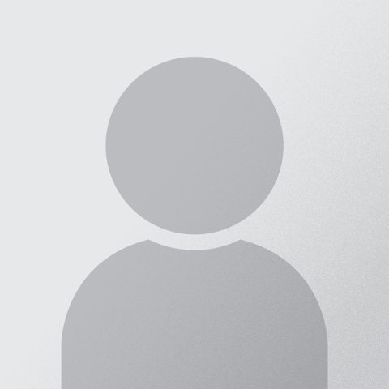

-
{% for position in page.positions %}
{% for person in sorted_people %}
{% if person.publish and person.status == 'current'%}
-
{% if person.picture %} {% else %}  {% endif %}
{{ person.name }}
{{ person.position }}
{% cycle 'close rows': '', '', '', '
- ' %}
{% endif %}
{% endif %}
{% endfor %}
{% endfor %}